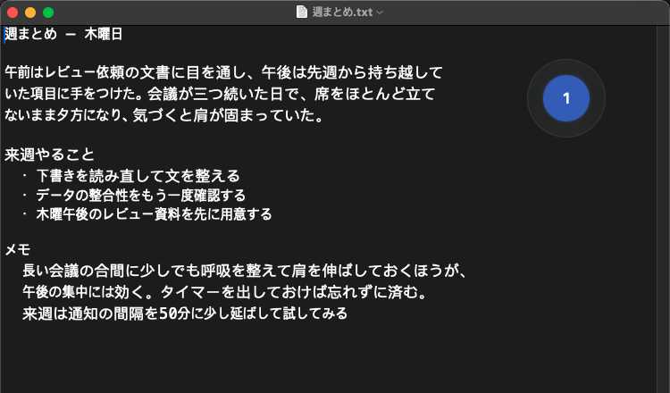
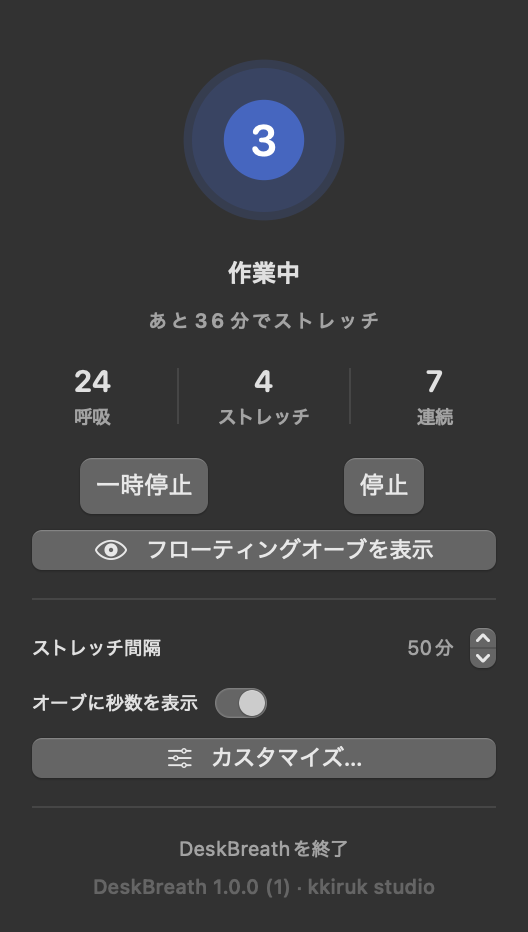
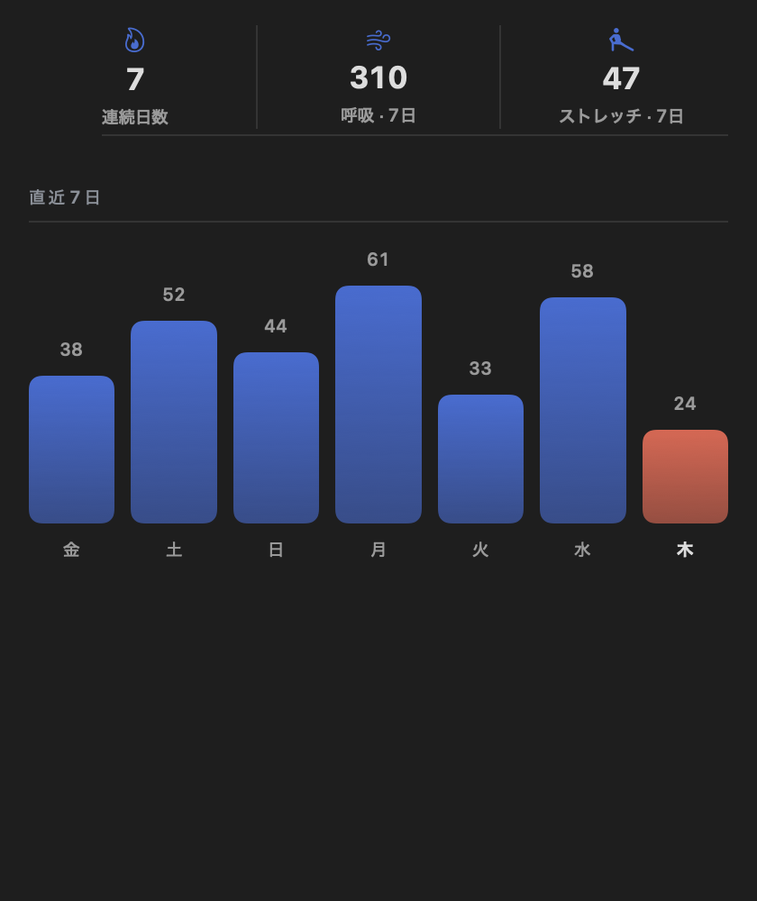

iPhone では画面を見なくても触覚で知らせます。


メニューバーにオーブがひとつ。4秒吸って6秒吐くリズムをそばで数えます。手を止めなくて大丈夫です。
無料で開始 · iPhone と Mac · サブスクなし
吐く息が長いほど体はゆるむので、これを基本にしました。ボックス呼吸や4-7-8に変えても、秒数を自分で決めても大丈夫です。切り替わるたびに触覚が変わるので、画面を見る必要はありません。



始めるのに必要なものは全部
買い切り一回、サブスクなし